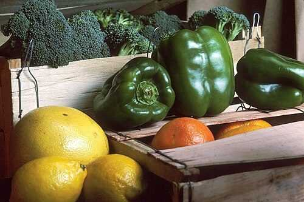

ACCESS
アクセス
三沢市春日台の、小高い丘の上にあります。
| 所在地 | 〒033-0053 青森県三沢市春日台1丁目152-522 |
|---|---|
| 電話 | 準備中 |
| 営業時間 | 準備中 |
| 定休日 | 準備中 |
| ご予約 | 準備中 |
| 駐車場 | 準備中 |
| SNS | Instagram @cafe66misawa |
三沢駅から徒歩10分ほどと紹介する記事があります(最新の道順はInstagramや地図でご確認ください)。
地図は住所をもとに表示しています。位置がずれる場合があります。
ひと息つく時間のイメージ
写真はフリー素材のイメージです。